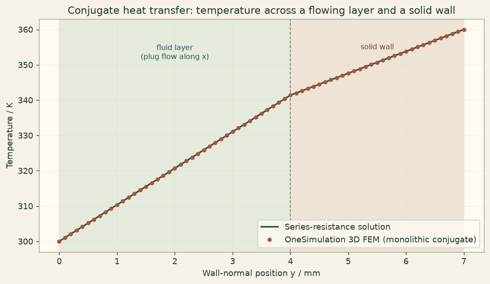

Docs › Examples › Conjugate heat transfer across a flowing layer and a wall
Conjugate heat transfer · 3D
Conjugate heat transfer across a flowing layer and a wall
A flowing fluid layer and a solid wall sharing one temperature field, graded against the series-resistance solution.

What it computes
OneSimulation solves one monolithic energy equation over fluid and solid with a piecewise conductivity and a piecewise plug velocity, the mesh aligned to the interface.
What it checks
The interface temperature and the heat-flux continuity match the series-resistance result exactly, with no streamwise variation.
The notebook
The complete notebook, cell by cell. Run it to produce the figures and the comparison printout.
A liquid layer of thickness \(t_f\) (conductivity \(k_f\)) streams along a plane solid wall of thickness \(t_s\) (conductivity \(k_s\)) with a uniform plug velocity \(u\). The outer face of the solid is heated to \(T_h\), the far side of the fluid layer is a cooled plate held at \(T_c\), and the remaining faces are insulated. Heat therefore crosses the fluid-solid interface, and the temperature field must satisfy the energy balance in both media at once with a common interface temperature and a continuous normal heat flux: a conjugate heat transfer problem.
OneSimulation treats both media in one material-temperature balance on a real 3D mesh (a monolithic conjugate formulation): the conductivity switches from \(k_f\) to \(k_s\) across the interface, and the advecting velocity is the plug profile in the fluid and zero in the solid. The mesh is aligned to the interface so each element sees a single medium.
Reference. The boundary data do not vary along the flow, so the temperature is independent of \(x\) and advection transports nothing: the balance reduces to steady conduction through two layers in series. With the thermal resistances \(R_f = t_f/k_f\) and \(R_s = t_s/k_s\),
where \(T_i\) is the interface temperature. The profile is linear in each medium, and the heat flux \(-k\,dT/dy\) is the same on both sides of the interface.
from dataclasses import dataclass, replace
from importlib.metadata import version
import numpy as np
import matplotlib.pyplot as plt
import matplotlib
from cycler import cycler
from matplotlib.colors import LinearSegmentedColormap
# OneSimulation figure style: cream paper, dark-green ink, green-sand-copper field colours
CREAM, INK, GREEN, COPPER = "#F7F2E7", "#223D35", "#336B57", "#B66E43"
FIELD_CMAP = LinearSegmentedColormap.from_list(
"onesimulation", ["#214D43", "#5F9175", "#A8BC91", "#E4D6A0", "#CD9561", "#A85539"])
DIVERGING_CMAP = LinearSegmentedColormap.from_list(
"onesimulation_diverging", ["#104F54", "#5E9996", "#F7F2E7", "#D2996E", "#A4472D"])
for _cmap in (FIELD_CMAP, DIVERGING_CMAP):
if _cmap.name not in matplotlib.colormaps:
matplotlib.colormaps.register(_cmap)
plt.rcParams.update({
"figure.facecolor": CREAM, "savefig.facecolor": CREAM, "axes.facecolor": "#FFFAF2",
"text.color": INK, "axes.labelcolor": INK, "axes.titlecolor": INK, "axes.edgecolor": "#9FA593",
"xtick.color": INK, "ytick.color": INK, "grid.color": "#D5D7C8", "image.cmap": "onesimulation",
"axes.prop_cycle": cycler(color=[GREEN, COPPER, "#5F9175", "#A85539", "#214D43", "#CD9561", "#8B9A8D"]),
})
from onesim.cad.d3 import Box
from onesim.materials import IsotropicSolid
from onesim.meshing import StructuredHexahedralMesher
from onesim.numerics import Numerics
from onesim.numerics.fem import FiniteElement, GalerkinAdvection, Lagrange
from onesim.numerics.linear import SparseDirect
from onesim.physics.heat_transfer import ConvectiveHeatTransfer, FixedTemperature, HeatFlux
from onesim.simulation import Problem, Simulation
print("OneSimulation:", version("onesimulation"))Parameters
The fluid is water-like, the wall a glass-like solid of comparable thermal resistance, so a substantial part of the temperature drop falls in each medium. The layers are stacked along \(y\) (fluid below, solid above); the flow runs along \(x\).
length = 0.020 # m, streamwise extent (x)
span = 0.005 # m, spanwise extent (z, insulated)
t_f, t_s = 0.004, 0.003 # m, fluid layer and solid wall thicknesses (y)
H = t_f + t_s
k_f, k_s = 0.6, 1.0 # W/(m·K), fluid and solid conductivities
rho_f, cp_f = 1000.0, 4180.0 # kg/m^3, J/(kg·K), fluid density and heat capacity
u_plug = 0.002 # m/s, uniform streamwise velocity of the fluid layer
T_c, T_h = 300.0, 360.0 # K, cooled fluid-side plate (y = 0) and heated solid face (y = H)
R_f, R_s = t_f / k_f, t_s / k_s
flux_ref = (T_h - T_c) / (R_f + R_s) # W/m^2, steady heat flux (towards the cold plate)
T_interface_ref = T_c + flux_ref * R_f # K, interface temperature
print(f"Analytic heat flux: {flux_ref:.2f} W/m^2, interface temperature: {T_interface_ref:.3f} K")
print(f"Peclet number of the fluid layer (u t_f rho cp / k_f): {u_plug*t_f*rho_f*cp_f/k_f:.1f}")Model
The conductivity is a position-dependent material coefficient; the advecting velocity is a position-dependent callable that vanishes in the solid. Both switch at the interface \(y = t_f\). The density and heat capacity only enter through the advective term and are therefore those of the fluid.
@dataclass(frozen=True)
class TwoMediumConductivity:
unit: str = "W/m/K"
def evaluate(self, *, y, **state):
return np.where(np.asarray(y) < t_f, k_f, k_s)
def plug_velocity(y):
# Uniform streamwise velocity in the fluid layer, no motion in the solid wall.
u = np.where(np.asarray(y) < t_f, u_plug, 0.0)
return np.column_stack((u, np.zeros_like(u), np.zeros_like(u)))
geometry = Box(length=length, width=H, height=span)
base = IsotropicSolid(
density=rho_f, specific_heat_capacity=cp_f, thermal_conductivity=k_f,
youngs_modulus=100e9, poisson_ratio=0.3, thermal_expansion_coefficient=1e-5,
)
material = replace(base, thermal_conductivity=TwoMediumConductivity())
# 35 cells of 0.2 mm across the stack: cell boundary number 20 lands exactly on the interface.
mesh = StructuredHexahedralMesher(cells=(4, 35, 2)).generate(geometry)
print("Mesh:", mesh.cell_count, "hexahedra")
model = ConvectiveHeatTransfer(domain=geometry.volume, material=material, velocity=plug_velocity)
problem = Problem(
name="Conjugate heat transfer: fluid layer and solid wall",
geometry=geometry,
physics=(model,),
boundary_conditions=(
FixedTemperature(boundary=geometry.boundaries.y_min, physics=model, value=T_c),
FixedTemperature(boundary=geometry.boundaries.y_max, physics=model, value=T_h),
# inlet, outlet and spanwise faces insulated (zero flux) -> cross-wall 1D balance
HeatFlux(
boundary=(geometry.boundaries.x_min | geometry.boundaries.x_max
| geometry.boundaries.z_min | geometry.boundaries.z_max),
physics=model, value=0.0,
),
),
)
simulation = Simulation(
problem=problem,
mesh=mesh,
numerics=Numerics(
spatial=FiniteElement(element=Lagrange(order=1), convection=GalerkinAdvection()),
linear_solver=SparseDirect(),
),
)
simulation.validate().require_valid()
result = simulation.solve_stationary()Comparison with the series-resistance solution
We sample the temperature across the stack at mid-domain and compare it with the two-slope reference. The interface temperature and the heat flux on either side of the interface (from the slope in each medium) are checked separately.
def analytic(y):
y = np.asarray(y, dtype=float)
in_fluid = y < t_f
t_fluid = T_c + flux_ref * y / k_f
t_solid = T_interface_ref + flux_ref * (y - t_f) / k_s
return np.where(in_fluid, t_fluid, t_solid)
sample_y = np.linspace(0.0, H, 71)
line = np.column_stack((np.full_like(sample_y, length / 2), sample_y, np.full_like(sample_y, span / 2)))
num = np.asarray(result.field(model.temperature).evaluate(line)).reshape(-1)
ana = analytic(sample_y)
max_abs_error = float(np.max(np.abs(num - ana)))
rel_error = max_abs_error / (T_h - T_c)
print(f"Maximum absolute error against the series solution: {max_abs_error:.4f} K ({100*rel_error:.3f} % of Th-Tc)")
# Interface temperature.
T_interface = float(np.asarray(result.field(model.temperature).evaluate([[length / 2, t_f, span / 2]])).reshape(-1)[0])
print(f"Interface temperature: FEM {T_interface:.3f} K, analytic {T_interface_ref:.3f} K")
# Flux continuity: -k dT/dy from the slope in each medium must agree on both sides.
fluid_side = sample_y < t_f - 1e-9
solid_side = sample_y > t_f + 1e-9
slope_fluid = np.polyfit(sample_y[fluid_side], num[fluid_side], 1)[0]
slope_solid = np.polyfit(sample_y[solid_side], num[solid_side], 1)[0]
q_fluid, q_solid = -k_f * slope_fluid, -k_s * slope_solid
print(f"Heat flux towards the cold plate: fluid side {-q_fluid:.2f} W/m^2, "
f"solid side {-q_solid:.2f} W/m^2, analytic {flux_ref:.2f} W/m^2")
# The plug flow carries a temperature field that does not vary along x.
upstream = np.column_stack((np.full_like(sample_y, length / 8), sample_y, np.full_like(sample_y, span / 2)))
downstream = np.column_stack((np.full_like(sample_y, 7 * length / 8), sample_y, np.full_like(sample_y, span / 2)))
T_up = np.asarray(result.field(model.temperature).evaluate(upstream)).reshape(-1)
T_down = np.asarray(result.field(model.temperature).evaluate(downstream)).reshape(-1)
print(f"Streamwise variation of the temperature field: {float(np.max(np.abs(T_down - T_up))):.2e} K")Figure
cream = "#fbf5eb"
fig, ax = plt.subplots(figsize=(8, 4.6), constrained_layout=True)
fig.patch.set_facecolor(cream); ax.set_facecolor("#fffaf2"); ax.grid(alpha=0.25)
ax.axvspan(0.0, t_f * 1000, color="#C7DAC3", alpha=0.45, lw=0)
ax.axvspan(t_f * 1000, H * 1000, color="#e4d6c3", alpha=0.6, lw=0)
ax.plot(sample_y * 1000, ana, color="#214D43", lw=1.8, label="Series-resistance solution")
ax.plot(sample_y * 1000, num, "o", color="#A85539", ms=4, label="OneSimulation 3D FEM (monolithic conjugate)")
ax.axvline(t_f * 1000, color="#8a7a63", ls="--", lw=1.0)
ax.text(t_f * 500, T_h - 4, "fluid layer\n(plug flow along x)", ha="center", va="top", fontsize=9, color="#2b4f5c")
ax.text((t_f + H) * 500, T_h - 4, "solid wall", ha="center", va="top", fontsize=9, color="#6b442f")
ax.set(xlabel="Wall-normal position y / mm", ylabel="Temperature / K",
title="Conjugate heat transfer: temperature across a flowing layer and a solid wall")
ax.legend(loc="lower right")
plt.show()Going further
Replace the uniform plug velocity by the parabolic Poiseuille profile of the fluid layer, or let OneSimulation supply it from a coupled Navier-Stokes solve; the cross-wall balance is unchanged as long as the boundary data stay uniform along the flow. Then let the inlet temperature differ from the developed field and follow the thermal entrance region, in which the interface temperature and the wall heat flux vary along \(x\) and the conjugate coupling becomes essential.